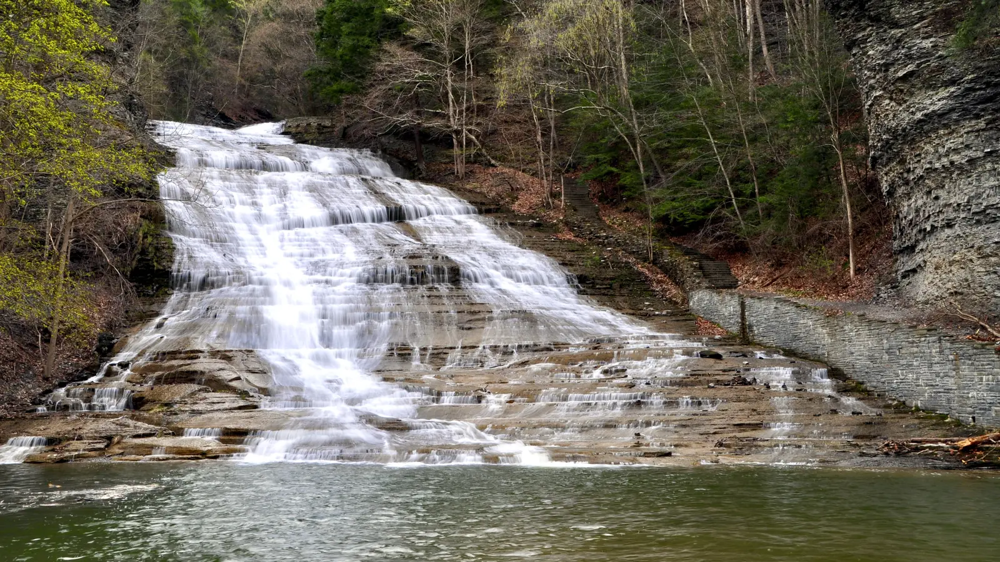

GO SOMEWHERE
DESTINATIONS
Family-tested inspiration for Upstate New York and road trips worth the windshield time.
CLOSE TO HOME
Start with Upstate New York.
Mountains, lakes, waterfalls, small towns and enough variety to fill years of weekends.

ADIRONDACKS
The Adirondacks weekend
A family-friendly framework for a mountain weekend without overscheduling.
FINGER LAKES
Waterfalls, lake towns and scenic roads
Pick one lake, one waterfall and one town. Let the rest happen on the way.

THOUSAND ISLANDS
Castles, boats and big-river views
A great family weekend when you want the trip to feel farther away than it is.
LAKE ONTARIO HISTORY DAY

OSWEGO · FORT ONTARIO
Fort Ontario with kids
A compact museum-and-ramparts plan with current 2026 logistics, lunch timing, lake views and a clean exit.
TRIP FINDER
Pick by mood, not mileage.
NEW DAY-TRIP PLAN

LAKE ONTARIO
Chimney Bluffs with kids
A bluff-view hike with a real turnaround plan, current park logistics and no pressure to force a loop.
LOCAL DAY PLAN

SYRACUSE · GREEN LAKES
Green Lakes with kids, without the all-day pileup
Walk first, eat on time, then choose one second act with current park logistics and backups.
FINGER LAKES DAY PLAN

FINGER LAKES · TAUGHANNOCK
Taughannock Falls with kids
Gorge first, overlook second, with the current beach closure treated like the real constraint it is.
SYRACUSE-AREA DAY PLAN

BALDWINSVILLE · NATURE DAY
Beaver Lake Nature Center with kids
One short trail, one wildlife stop, one lunch, and no need to conquer all nine miles.
FINGER LAKES DAY PLAN

FINGER LAKES · STAIR-HEAVY DAY
Watkins Glen with kids
Gorge first, a hard stair checkpoint, an optional shuttle and no obligation to make the day heroic.
WESTERN NEW YORK DAY PLAN

WESTERN NEW YORK · LETCHWORTH
Letchworth without the park-wide marathon
Two waterfall views, one overlook, lunch, then the nature center or a clean exit.
NEXT WEEKEND
Twenty-five realistic two-night escapes from Syracuse.
Compare train or drive, one-base loop strategy, centerpiece, rain backup and honest tradeoff—then save a family shortlist of up to four.
SCHOHARIE COUNTY

UNDERGROUND DAY
Howe Caverns with kids
A reservation-first cave day built around the actual temperature, distance, stairs and no-bag rule.
NORTHERN FINGER LAKES

WILDLIFE DRIVE
Montezuma National Wildlife Refuge with kids
A car-first wildlife day that can shrink gracefully when weather or attention runs out.
CENTRAL NEW YORK

WATERFALL DAY
Chittenango Falls with kids
A view-first plan with a conditions-based gorge decision and an early exit.
SYRACUSE FAMILY DAY

ZOO DAY
Rosamond Gifford Zoo with kids
A two-loop itinerary with an indoor reset, early lunch and a deliberate exit.
SYRACUSE RUGGED PARK

JAMESVILLE
Clark Reservation with kids
A short, conservative itinerary built around the view—not a forced descent.
SYRACUSE INDOOR DAY

ARMORY SQUARE
The MOST with kids
A three-zone plan with current tickets, parking, sensory resources and dome choices.
CLOSE-TO-SYRACUSE FOREST DAY

FABIUS · FREE HIKING
Highland Forest with kids
A short-route plan with current hours, trail rules, fall visibility and a clean exit.
CLOSE-TO-SYRACUSE WATERFALL DAY

MANLIUS · $2 VEHICLE ADMISSION
Pratt’s Falls with kids
A waterfall-first itinerary with current hours, trail rules, picnic logistics and a clean exit.
MOHAWK VALLEY HISTORY DAY

ROME · FREE ADMISSION
Fort Stanwix with kids
Use the reconstructed fort, Junior Ranger mission and short outside loop without dragging the day out.
SYRACUSE HISTORY DAY

INDOOR · DONATION-BASED
Erie Canal Museum with kids
A ninety-minute plan with current hours, parking, access and clean-exit guidance.
AUBURN HISTORY DAY

TWO OPERATORS · ONE RESERVATION
Harriet Tubman National Historical Park with kids
A focused plan for the Home tour, NPS church, access, weather and a respectful exit.
SENECA FALLS HISTORY DAY

FREE · CHAPEL FIRST
Women’s Rights National Historical Park with kids
A focused plan for current hours, the Wesleyan Chapel, access limits, food and a clean exit.
FINGER LAKES WATERFALL DAY

LOWER FALLS · PROOF LOOP
Buttermilk Falls State Park with kids
A current Ithaca plan that treats the approximately 600-foot climb as an earned option.